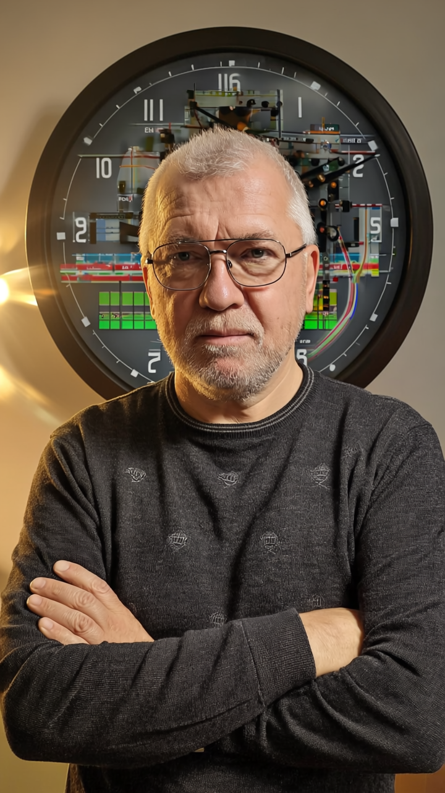

График 2
Обзор
Быстрый снимок рынка
Графики
Интерактивная аналитика по ключевым метрикам
График 1
Сравнение селлеров по метрикам
График 3
Реклама vs нетто-выручка
Размер круга = выкуп, цвет = селлер
График 4
Воронка трафика и конверсии
Отчет
Полный текст и все таблицы
Загрузка отчета...
Об авторе отчета
Александр Дублин - человек-бардак. Но системный.

АБ
Добавьте файл `assets/alexander-borisovich-1.png`, и фото появится автоматически.

Система
Второй слот готов под `assets/alexander-borisovich-2.png`.
Метод
Третий слот готов под `assets/alexander-borisovich-3.png`.
#знакомство
Владимир Седов, основатель «Асконы», однажды сказал: «Предприниматель — это не отличник. Это человек-бардак. Он должен творить.» А если бы он знал меня, он бы точно добавил: «А вот хороший консультант — это человек-бардак с методологией.»
А я — как раз такой.
Когда я прихожу в компанию, я не предлагаю одну «правильную» картинку. Я показываю несколько реальностей, в которых можно жить и работать. Помогаю выбрать ту, что подходит именно вам. А потом, когда пыль уляжется, я собираю из этого хаоса структуру, систему, план — с вашей логикой и с вашими смыслами.
Я - методолог и систематизатор. И если сначала кажется, что «всё взорвалось» - значит, мы добрались до сути. Я не исправляю то, что «не работает». Я показываю, почему оно не должно было работать изначально, и как сделать иначе, чтобы действительно заработало. Я не настраиваю KPI. Я показываю, почему их не стоило настраивать так, как вы это делали.
Что я делаю
- Раздвигаю границы управленческого мышления
- Помогаю разобраться в системных конфликтах внутри бизнеса
- Перевожу философию и концепции в методики и инструменты
- Соединяю модернизм и постмодернизм — выбираю подходящий именно вашему контексту
Работаю как головой, так и руками
- Придумаю решение
- Докручу идею
- Превращу в методику и внедрю с командой
Образование
- Инженер (системы управления подводной лодкой), СПб ИТМО
- Экономист (финансы и кредит), НОУ «Институт экономики и финансов»
- 1000 и 1 различных курсов и тренингов
О себе
- Хожу в театр и на концерты 4-6 раз в месяц
- Посещаю музеи и выставки
- Занимаюсь фитнесом 5 раз в неделю
- Танцую танго, бачату, румбу, фокстрот и еще несколько
- Иногда играю в шашки
- Читаю, слушаю лекции, веду конспекты и маргиналии
- Могу порекомендовать отличную книгу по любому поводу - просто спросите 😉
Контакты
Город: Санкт-Петербург
Telegram: @AleksandrBorisovich73
Мой блог в Телеграм: t.me/ab_dublin
Мой блог на Дзене: dzen.ru/dbs_dubas